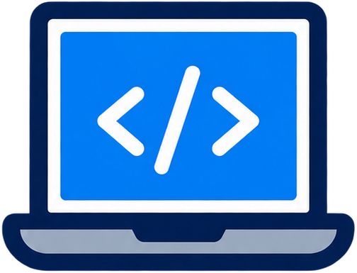

Matemática ciclo superior
4 h semanales · 144 h anuales
Números reales y complejos, funciones polinómicas, exponenciales, logarítmicas y trigonométricas.

Formación para asistir al usuario de productos y servicios informáticos, con instalación, capacitación, mantenimiento primario, protección de datos y resolución de problemas, y apoyo a la compra y venta de equipos y programas.
El Técnico en Informática Profesional y Personal está capacitado para asistir al usuario de productos y servicios informáticos, brindando servicios de instalación, capacitación, sistematización, mantenimiento primario, resolución de problemas derivados de la operatoria y apoyo a la contratación de productos o servicios informáticos. Puede actuar de nexo entre el especialista o experto en el tema y el usuario final.
Trabaja en estrecha relación con el usuario, por lo general de forma individual y sin supervisión directa. Sus intervenciones suelen ser puntuales: según el diseño curricular, puede dar apoyo a alrededor de un centenar de usuarios a lo largo del tiempo. Por eso es clave que sepa diagnosticar fallas de hardware, software o conectividad sin afectar los datos, los programas ni la operatoria del usuario, y que sepa cuándo derivar un problema a un especialista o servicio técnico.
El plan se desarrolla de 4.º a 7.º año y combina materias científico-tecnológicas (Matemática, Física, Química y Trabajar con modelos) con materias de formación técnica específica en informática: hardware, sistemas operativos, redes, programación, bases de datos y seguridad. Hacia el final de la carrera, las Prácticas Profesionalizantes del Sector Informático (216 horas anuales) integran todos los saberes en situaciones de trabajo reales.
4 h semanales · 144 h anuales
Números reales y complejos, funciones polinómicas, exponenciales, logarítmicas y trigonométricas.
3 h semanales · 108 h anuales
Energía mecánica y térmica, electricidad, campo y corrientes eléctricas, óptica geométrica.
2 h semanales · 72 h anuales
Estructura atómica, uniones químicas, estequiometría, soluciones, pH y electroquímica.
2 h semanales · 72 h anuales
Fundamentos de la electricidad: Ley de Ohm, circuitos serie y paralelo, leyes de Kirchhoff y corriente alterna.
2 h semanales · 72 h anuales
Programación en ANSI C/C++, documentación en UML, código fuente y objeto, asistencia básica al usuario.
4 h semanales · 144 h anuales
Arquitectura de von Neumann, CPU, registros, buses, memoria, interrupciones y refurbishing de equipos.
4 h semanales · 144 h anuales
Funciones y estructura de los sistemas operativos en equipos de escritorio y dispositivos móviles.
2 h semanales · 72 h anuales
Ofimática: fórmulas, macros, gráficos, presentaciones dinámicas y bases de datos.
4 h semanales · 144 h anuales
Límites, continuidad, derivadas, máximos y mínimos, e integrales definidas e indefinidas.
3 h semanales · 108 h anuales
Sistemas de numeración, álgebra de Boole y circuitos combinacionales.
4 h semanales · 144 h anuales
Transmisión de datos (simplex, full duplex, sincrónica y asincrónica), medios, Nyquist y Shannon.
2 h semanales · 72 h anuales
Arreglos, métodos de búsqueda y ordenamiento, funciones y bibliotecas.
4 h semanales · 144 h anuales
Redes LAN, WAN y MAN, modelo OSI, Ethernet, cableado UTP, switches y routers.
4 h semanales · 144 h anuales
Sistemas operativos propietarios, redes igualitarias, recursos compartidos y escritorio remoto.
2 h semanales · 72 h anuales
Bases de datos, modelo entidad-relación y modelo relacional.
2 h semanales · 72 h anuales
Funciones vectoriales, transformadas de Laplace y Fourier, probabilidad y estadística.
3 h semanales · 108 h anuales
Familias lógicas, circuitos secuenciales, flip-flops, contadores y registros.
3 h semanales · 108 h anuales
Programación lineal, camino crítico, simulación, procesos de Markov y teoría de colas.
3 h semanales · 108 h anuales
Recursos y vulnerabilidades, disponibilidad, confiabilidad e integridad, y normativa vigente.
2 h semanales · 72 h anuales
Contrato de trabajo, remuneración, jornada, licencias y ART.
2 h semanales · 72 h anuales
Estructuras de datos, archivos secuenciales y aleatorios, y estructuras dinámicas.
4 h semanales · 144 h anuales
Ruteo, subneteo, NAT, IPv6, dominios de colisión y broadcast, redes inalámbricas.
4 h semanales · 144 h anuales
Planificación y administración de servidores, shells y configuración de usuarios.
2 h semanales · 72 h anuales
HTML, CSS y scripts: estructura de documentos, etiquetas, tablas, variables, sesiones y cookies.
2 h semanales · 72 h anuales
Teorías del emprendedorismo, finanzas, marketing y planificación de emprendimientos.
2 h semanales · 72 h anuales
Riesgos laborales, higiene y seguridad, ergonomía y primeros auxilios.
2 h semanales · 72 h anuales
Diagramas de flujo de datos, diccionario de datos, diagramas de estado y técnicas de análisis.
3 h semanales · 108 h anuales
Modelo entidad-relación, cardinalidad, normalización (1FN a FNBC) y dependencias funcionales.
4 h semanales · 144 h anuales
Programación orientada a objetos en un entorno de trabajo, formularios y estructuras de control.
4 h semanales · 144 h anuales
Protocolos de mantenimiento, diagnóstico de fallas, backups, reparación y despiece de equipos.
4 h semanales · 144 h anuales
Instalación, configuración y mantenimiento de redes informáticas.
216 h anuales
Consolidar e integrar las capacidades del perfil en situaciones de trabajo reales.
Capacitar e instruir al usuario en el uso de equipos y programas, analizar su operatoria para ordenarla y resolver problemas que están fuera de su alcance.
Resguardar y restaurar archivos, reparar datos afectados por fallas o virus, prevenir la pérdida de información y reorganizar los datos para mantener la eficiencia.
Planificar y realizar instalaciones de equipos, componentes físicos de red, programas y sistemas, compatibilizando sus componentes y resolviendo problemas de integración.
Diagnosticar fallas, reemplazar componentes defectuosos, reinstalar software, configurar equipos y realizar mantenimiento preventivo y primario de hardware y software.
Adaptar y complementar las funcionalidades de los programas y crear pequeñas soluciones con las herramientas que ofrecen los fabricantes de los sistemas.
Relevar requerimientos, comparar precios y especificaciones técnicas, presupuestar y armar equipos de computación, y capacitar a futuros usuarios sobre los productos vendidos.
Planificar su tiempo, administrar sus tareas, capacitarse para mantenerse actualizado y llevar registros de lo actuado, ya sea en una organización o en un emprendimiento propio.
El diseño curricular no establece habilitaciones profesionales específicas para este técnico. Señala que, si en el futuro se plantean, deberán tener en cuenta el perfil homologado y su trayectoria formativa.
El técnico puede desempeñarse brindando asistencia técnica y asesoramiento a usuarios, tanto dentro de empresas y organizaciones de cualquier tipo como en empresas de servicios informáticos, comercios tecnológicos o mediante un emprendimiento propio o un microemprendimiento. También puede trabajar en empresas que comercializan productos o servicios de tecnologías de la información y las comunicaciones, capacitando y asesorando a sus clientes.
En 7.º año, las Prácticas Profesionalizantes del Sector Informático tienen una carga de 216 horas anuales. Su propósito es que los estudiantes consoliden, integren y amplíen las capacidades del perfil profesional, a partir de situaciones de trabajo que pueden desarrollarse dentro de la escuela (proyectos de prácticas, proyectos tecnológicos, Módulos Integradores de 7.º año) o fuera de ella (trabajos por cuenta de terceros).
Los entornos formativos son el Laboratorio de Hardware, el Laboratorio de Redes, el Laboratorio de Programación y el Laboratorio de Software.
Conocé el proceso de pre-inscripción y empezá el camino técnico en la E.E.S.T. N.º 5.